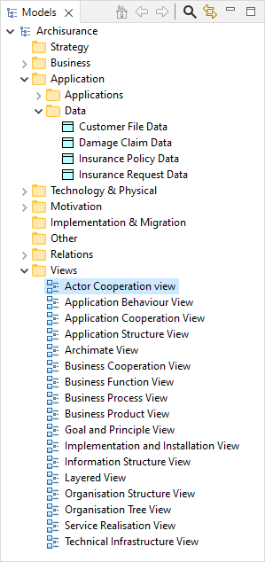

ArchiMate 模型由许多属于不同“层”的 ArchiMate概念组成 - “业务”层、层和 “应用技术” “”层。每个 ArchiMate概念都属于其中一个层。例如， “业务对象”属于“业务”层，而“应用程序组件”属于应用程序层。
根据ArchiMate的规则模型中的每个概念都可以通过一个或多个关系 ，连接连接到一个或多个其他概念。
解释这些概念及其关系超出了本指南的范围。如需了解更多信息，请参阅 ArchiMate规格)
ArchiMate模型由这些概念的配置组成，这些概念通过各种关系相互连接。ArchiMate模型在“模型”窗口中的Archi中表示为组织成文件夹的树状结构：

显示示例模型的模型树窗口
每个ArchiMate概念都放置在模型树中的相应文件夹中。